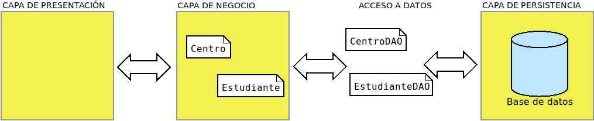

4.6. Programación con conectores#
Como se ha podido ver hasta aquí, el acceso de una aplicación a una base de datos relacional es relativamente sencillo y medianamente semejante sea cual sea el lenguaje de programación y el SGBD. Por tanto, el usar de modo básico conectores no entraña excesiva dificultad. Lo complicado, en realidad, es abstraer al resto del programa del acceso, de modo que logremos que manipule puramente objetos, aunque la información no esté almacenada según este modelo en la base de datos.
Así pues, el propósito a seguir cuando se codifica una aplicación es que todas las particularidades del acceso a datos estén reducidas a un paquete dentro de la aplicación (p.ej. llamado backend), fuera del cual no haya otra cosa que objetos.
Uno de los patrones más usados para lograr la abstracción es el patrón DAO, que se carga de tomar los objetos de la capa de negocio y transladarlos al soporte de persistencia o viceversa. Retomando el ya manido ejemplo de centros y alumnos:
Este patrón básicamente:
Define una interfaz para establecer las operaciones CRUD y, quizás, algunas consultas más específicas.
Define clases (
CentroDAO,EstudianteDAO) que implementan la interfaz anterior para el soporte de datos que utilice la aplicación, el cual forzosamente no tiene por qué ser una base de datos relacional. Un cambio en el soporte implica rehacer estas implementaciones, sin alterar el resto de la aplicación.El resto de la aplicación se encarga de utilizar la interfaz, por lo que es ajena a la implementación para un soporte particular.
Por lo general, aunque no forzosamente, cada clase del modelo tendrá asociada
una clase DAO. Recordemos las clases del modelo (Centro y
Estudiante), aunque en esta ocasión para intentar uniformizar la
implementación forzaremos a que ambas deriven de una interfaz que nos asegura que
ambas manejan de igual modo su identificador:
public interface Entity {
public Long getId();
public void setId(Long id);
}
La clase Centro es esta:
public class Centro implements Entity {
public static enum Titularidad {
PUBLICA("pública"),
PRIVADA("privada");
private String desc;
Titularidad(String desc) {
this.desc = desc;
}
public String getDescripcion() {
return desc;
}
/**
* Obtiene la titularidad a partir de la descripción.
* @param desc La descripción
* @return El elemento Titularidad o null, si no hay ninguno con esa descripción.
*/
public static Titularidad fromDesc(String desc) {
return Arrays.stream(Titularidad.values())
.filter(t -> t.getDescripcion().compareToIgnoreCase(desc) == 0).findFirst().orElse(null);
}
}
/**
* Código identificativo del centro.
*/
private Long id;
/**
* Nombre del centro.
*/
private String nombre;
/**
* Titularidad: pública o privada.
*/
private Titularidad titularidad;
public Centro() {
super();
}
/**
* Carga todos los datos en el objeto.
* @param id Código del centro.
* @param nombre Nombre del centro.
* @param titularidad Titularidad del centro.
* @return El propio objeto.
*/
public Centro cargarDatos(Long id, String nombre, Titularidad titularidad) {
setId(id);
setNombre(nombre);
setTitularidad(titularidad);
return this;
}
/**
* Constructor que admite todos los datos de definición del centro.
* @param id Código del centro.
* @param nombre Nombre del centro.
* @param titularidad Titularidad del centro (pública o privada)
*/
public Centro(Long id, String nombre, Titularidad titularidad) {
cargarDatos(id, nombre, titularidad);
}
@Override
public Long getId() {
return id;
}
@Override
public void setId(Long id) {
this.id = id;
}
public String getNombre() {
return nombre;
}
public void setNombre(String nombre) {
this.nombre = nombre;
}
public Titularidad getTitularidad() {
return titularidad;
}
public void setTitularidad(Titularidad titularidad) {
this.titularidad = titularidad;
}
@Override
public String toString() {
return String.format("%s (%s)", getNombre(), getId());
}
}
que incluye la definición del enum Titularidad. La del Estudiante es esta
otra:
public class Estudiante implements Entity {
/**
* Identificador del estudiante.
*/
private Long id;
/**
* Nombre completo del estudiante.
*/
private String nombre;
/**
* Fecha de nacimiento del estudiante.
*/
private LocalDate nacimiento;
/**
* Centro al que está adscrito.
*/
private Centro centro;
public Estudiante() {
super();
}
/**
* Carga los datos del estudiante.
* @param id El identificador del estudiante.
* @param nombre El nombre del estudiante.
* @param nacimiento La fecha de nacimiento.
* @param centro El centro al que está adscrito.
* @return El propio objeto.
*/
public Estudiante cargarDatos(Long id, String nombre, LocalDate nacimiento, Centro centro) {
setId(id);
setNombre(nombre);
setNacimiento(nacimiento);
setCentro(centro);
return this;
}
/**
* Constructor que carga todos los datos.
* @param id El identificador del estudiante.
* @param nombre El nombre del estudiante.
* @param nacimiento La fecha de nacimiento.
* @param centro El centro al que está adscrito.
* @return El propio objeto.
*/
public Estudiante(Long id, String nombre, LocalDate nacimiento, Centro centro) {
this.cargarDatos(id, nombre, nacimiento, centro);
}
@Override
public Long getId() {
return id;
}
@Override
public void setId(Long id) {
this.id = id;
}
public String getNombre() {
return nombre;
}
public void setNombre(String nombre) {
this.nombre = nombre;
}
public LocalDate getNacimiento() {
return nacimiento;
}
public void setNacimiento(LocalDate nacimiento) {
this.nacimiento = nacimiento;
}
public Centro getCentro() {
return centro;
}
public void setCentro(Centro centro) {
this.centro = centro;
}
@Override
public String toString() {
LocalDate hoy = LocalDate.now();
return String.format("%s (%d años)", getNombre(), ChronoUnit.YEARS.between(getNacimiento(), hoy));
}
}
Este es el modelo. Ahora necesitamos implementar el acceso a los datos. Eso
requiere definir la interfaz para las operaciones CRUD, que en un alarde de
originalidad llamaremos Crud, y dos clases DAO, CentroSqlDAO y
EstudianteSqlDAO. La interfaz podemos establecerla como estimemos mejor,
mientras recoja todas las operaciones necesarias. Por ejemplo:
public interface Crud<T extends Entity> {
public Optional<T> get(Long id) throws DataAccessException;
public List<T> get() throws DataAccessException;
public boolean delete(Long id) throws DataAccessException;
default boolean delete(T obj) throws DataAccessException {
return delete(obj.getId());
}
public void insert(T obj) throws DataAccessException;
default void insert(Iterable<T> objs) throws DataAccessException {
for(T obj: objs) insert(obj);
}
default void insert(T[] objs) throws DataAccessException {
insert(Arrays.asList(objs));
}
public boolean update(T obj) throws DataAccessException;
public boolean update(Long oldId, Long newId) throws DataAccessException;
default boolean update(T obj, Long newId) throws DataAccessException {
return update(obj.getId(), newId);
}
}
Aclaración
Esta interfaz no tiene por qué ser definida exactamente así: podrían defirnir otra que satisfaga también la necesidad de implementar las cuatro operaciones básicas. Por ejemplo, podríamos devolver Stream en vez de List.
SEGUIR POR AQUI…
Prudencia
La solución que se propone aquí y cuyo código se encuentra completo en los test de este repositorio de GitHub es más bien una prueba de concepto y tiene el propósito lograr abstraer al programa de los detalles de la conexión, de manera que la persistencia se pueda manejar exclusivamente con objetos. Precisamente, esa la labor de las herramientas ORM y esas son las que deberíamos usar si quisiéramos crear una aplicación real.
Para lograr esta abstracción proponemos un patrón DAO, que separa por un lado los objetos del modelo de datos de nuestra aplicación y por otro los objetos que se encargan del acceso a la base de datos. Ilustrémoslo con un ejemplo muy sencillo: un conjunto de estudiantes que cursan estudios en centros de enseñanza:
Como puede observarse, las dos definiciones son independientes del soporte de
almacenamiento y responden únicamente a la lógica de la aplicación[1]. Para
simplicar las cosas obligamos a que todas estas clases incluyan un campo
identificador, de ahí que implementen una interfaz Entity:
public interface Entity {
public int getId();
public void setId(int id);
}
Si estas clases son ajenas a su persistencia, ¿cómo entonces se escribe o recupera información sobre ellas en la base de datos? El patrón consiste en crear por cada una otra clase que se encargue de esa labor. Por tanto:
Clase |
Clase DAO |
|---|---|
Centro |
CentroSqlite |
Estudiante |
EstudianteSqlite |
Estas clases encargadas de la conversión entre el modelo de objetos (la definición de la clase en la aplicación) y el modelo relacional (su persistencia en la base de datos) dependen de cuál sea el SGBD concreto, ya que ninguno implementa exactamente igual el lenguaje SQL[2]. La idea es que cada vez que haya que consultar la base de datos, se usen estas clases y el resto del código de nuestra aplicación quede libre de sentencias SQL, objetos Connection y demás particularidades de la persistencia. Por ejemplo, obtener un centro se podrá hacer así[3]:
// ds es un DataSource.
var centroDao = new CentroSqlite(ds);
Centro centro = centroDao.get(11004866);
Como para todos los objetos, en principio, hay que implementar las mismas operaciones de persistencia, esto es, las operaciones CRUD, podemos definir una interfaz que cumplan todas estas clases relacionadas con el almacenamiento en el backend:
Nota
Estas operaciones son universales y no exclusivas del ejemplo ilustrativo que nos proponemos resolver. Por ese motivo la hemos incluido como parte de la librería sqlutils. De hecho, se ha hecho un esfuerzo por generalizar todo lo que no depende de la particularidad del ejemplo, de ahí que haya mucho código dentro de la librería que utilice clases genéricas y reflexión. Crear una solución particular que cumpla los mismos principios de abstracción para el resto de la aplicación, no es en exceso complicado y puede resultar un ejercico pedagógicamente muyl útil.
Son precisas algunas aclaraciones:
La interfaz es genérica, porque una clase orientada a almacenar estudiantes deberá recuperar estudiantes o admitir un estudiante cuando desea añadir datos a la base de datos, mientras que si está orientada a centros, deberá hacer lo propio con centros.
El método de inserción de varios objetos puede resultar redundante y, de hecho, se facilita una implementación predeterminada que consiste en insertar sucesivamente todos. Pero es útil porque da pie a que podamos implementar algo más eficiente, si así lo estimamos oportuno.
Hemos preferido que la obtención de todos los objetos de una misma clase se haga mediante un flujo para lo cual podemos usar el método
SqlUtils.resultToStreamde sqlutils. Por supuesto es posible también alterar la firma del método para devolver List[4].La obtención de un objeto a partir de su identificador puede resultar infructuosa, si tal objeto no existe en el almacenamiento. Por ese motivo se ha preferido devolver Opcional en vez de directamente el objeto.
Todas estas operaciones son susceptibles de generar excepciones (típicamente SQLException si la base de datos es relacional), así que hemos definido una excepción propia para abstraernos de cuál es la excepción particular del soporte de almacenamiento.
Esta, pues, es la interfaz que cumplirán todas las clases encargadas de
comunicarse con la base de datos para extraer o guardar datos. La implementación
de CentroSqlite para almacenar objetos Centros es esta:
public class CentroSqlite extends AbstractDao implements Crud<Centro> {
/**
* Constructor de la clase.
* @param ds Fuente de datos.
*/
public CentroSqlite(DataSource ds) {
super(ds);
}
/**
* Constructor de la clase.
* @param conn Conexión de datos.
*/
public CentroSqlite(Connection conn) {
super(conn);
}
/**
* Constructor de la clase.
* @param cp Proveedor de la conexión.
*/
public CentroSqlite(ConnectionProvider cp) {
super(cp);
}
/**
* Recupera los datos de un registro de la tabla para convertirlos en objeto Centro.
* @param rs El ResultSet que contiene el registro.
* @return Un objeto Centro que modela los datos del registro.
* @throws SQLException Cuando se produce un error al recuperar los datos del registro.
*/
private static Centro resultToCentro(ResultSet rs) throws SQLException {
int id = rs.getInt("id_centro");
String nombre = rs.getString("nombre");
String titularidad = rs.getString("titularidad");
return new Centro(id, nombre, titularidad);
}
/**
* Fija los valores de los campos de un registro para una sentencia parametrizada.
* @param centro El objeto Centro.
* @param pstmt La sentencia parametrizada.
* @throws SQLException Cuando se produce un error al establecer valor para los parámentros de la consulta.
*/
private static void setCentroParams(Centro centro, PreparedStatement pstmt) throws SQLException {
pstmt.setString(1, centro.getNombre());
pstmt.setString(2, centro.getTitularidad());
pstmt.setString(3, centro.getTitularidad()); // TODO: Esto en realidad es un JSON.
pstmt.setInt(4, centro.getId());
}
@Override
public Stream<Centro> get() throws DataAccessException {
final String sqlString = "SELECT * FROM Centro";
try {
// No pueden cerrarse ahora, sino cuando se agote el Stream
Connection conn = cp.getConnection();
Statement stmt = conn.createStatement();
ResultSet rs = stmt.executeQuery(sqlString);
// Se pasan conn y stmt para que el stream pueda cerrarlos
// cuando el mismo se cierre. En cualquier caso, dependiendo de cp,
// la conexión se cerrará realmente o no.
return SqlUtils.resultSetToStream(conn, stmt, rs, CentroSqlite::resultToCentro);
}
catch(SQLException err) {
throw new DataAccessException(err);
}
}
@Override
public Optional<Centro> get(int id) throws DataAccessException {
final String sqlString = "SELECT * FROM Centro WHERE id_centro = ?";
try(
Connection conn = cp.getConnection();
PreparedStatement pstmt = conn.prepareStatement(sqlString);
) {
pstmt.setInt(1, id);
ResultSet rs = pstmt.executeQuery();
return rs.next()?Optional.of(resultToCentro(rs)):Optional.empty();
}
catch(SQLException err) {
throw new DataAccessException(err);
}
}
@Override
public void insert(Centro centro) throws DataAccessException {
final String sqlString = "INSERT INTO Centro (nombre, titularidad, direccion, id_centro) VALUES (?, ?, ?, ?, ?)";
try(
Connection conn = cp.getConnection();
PreparedStatement pstmt = conn.prepareStatement(sqlString);
) {
setCentroParams(centro, pstmt);
pstmt.executeUpdate();
}
catch(SQLException err) {
throw new DataAccessException(err);
}
}
@Override
public void insert(Iterable<Centro> centros) throws DataAccessException {
final String sqlString = "INSERT INTO Centro (nombre, titularidad, direccion, id_centro) VALUES (?, ?, ?, ?, ?)";
try(
Connection conn = cp.getConnection();
TransactionManager tm = new TransactionManager(conn);
PreparedStatement pstmt = tm.getConn().prepareStatement(sqlString);
) {
for(Centro centro: centros) {
setCentroParams(centro, pstmt);
pstmt.addBatch();
}
pstmt.executeBatch();
tm.commit();
}
catch(SQLException err) {
throw new DataAccessException(err);
}
}
@Override
public boolean delete(int id) throws DataAccessException {
final String sqlString = "DELETE FROM Centro WHERE id_centro = ?";
try (
Connection conn = cp.getConnection();
PreparedStatement pstmt = conn.prepareStatement(sqlString);
) {
pstmt.setInt(1, id);
return pstmt.executeUpdate() > 0;
}
catch(SQLException err) {
throw new DataAccessException(err);
}
}
@Override
public boolean update(Centro centro) throws DataAccessException {
final String sqlString = "UPDATE Centro SET nombre = ?, titularidad = ?, direccion = ? WHERE id_centro = ?";
try(
Connection conn = cp.getConnection();
PreparedStatement pstmt = conn.prepareStatement(sqlString);
) {
setCentroParams(centro, pstmt);
return pstmt.executeUpdate() > 0;
}
catch(SQLException err) {
throw new DataAccessException(err);
}
}
@Override
public boolean update(int oldId, int newId) throws DataAccessException {
final String sqlString = "UPDATE Centro SET id_centro = ? WHERE id_centro = ?";
try(
Connection conn = cp.getConnection();
PreparedStatement pstmt = conn.prepareStatement(sqlString);
) {
pstmt.setInt(1, newId);
pstmt.setInt(2, oldId);
return pstmt.executeUpdate() > 0;
}
catch(SQLException err) {
throw new DataAccessException(err);
}
}
}
Si observamos la implementación de cualquiera de las operaciones CRUD, veremos
que consiste en poner en práctica lo aprendido anteriormente: se abre una
conexión, se construye ls sentencia SQL apropiada y se ejecuta para realizar
la operación. Tan sólo el método que devuelve un Stream se sale un poco de
esta regla por las particularidades del propio Stream (que no existirían si
hubiéramos decidido devolver List):
@Override
public Stream<Centro> get() throws DataAccessException {
final String sqlString = "SELECT * FROM Centro";
try {
Connection conn = cp.getConnection();
Statement stmt = conn.createStatement();
ResultSet rs = stmt.executeQuery(sqlString);
return SqlUtils.resultSetToStream(conn, stmt, rs, CentroSqlite::resultToCentro);
}
catch(SQLException err) {
throw new DataAccessException(err);
}
// No cerramos la conexión.
}
Obsérvese que, en este método, a diferencia de los anteriores, no cerramos la
conexión, ni la sentencia, ni el resultado, ya que de lo contrario, al ser la
evaluación perezosa y obtenerse registros de ResultSet a medida que se
consumen, no podremos obtener centros del Stream devuelto, Quien se
encargará de cerrar finalmente todo será el propio flujo cuando se cierre, por
lo que convendrá usar con él un try-with-resources. Por ese motivo, es preciso
pasar tanto la conexión como la sentencia a SqlUtils.resultToStream.
En principio, cada operación parece abrir una conexión propia y cerrarla al
acabar (excepto este último método por la particularidad ya referida). Si se
utiliza un pool de conexiones y se facilita para la creación
del objeto CentroSqlite el DataSource correspondiente, esto no penaliza
prácticamente el rendimiento y es muy cómodo. El problema de que cada operación
abra y cierre su propio objeto Connection es que nos quedamos sin poder reunir
en una misma transacción dos o más operaciones, ya que las operaciones que
constituyen una transacción deben compartir la misma conexión.
En consecuencia, si lo requiere la circunstancia, necesitamos poder crear estos
objetos a partir de una conexión ya existente y que sus métodos la utilicen sin
cerrarla. Para no duplicar código, hemos acudido a una argucia: un objeto
ConnectionProvider que enmascara el hecho de que hayamos creado el objeto a
partir de un DataSource o un Connection compartido, en cuyo último caso no
hay que cerrar jamás al acabar la operación, aun cuando en el método que la
implementa usemos una estructura try-with-resources. Por esta razón, las
conexiones se obtienen a partir de un atributo cp (definido en
AbstractDao como un ConnectionProvider). Esta es también la razón por
la que se pasa a SqlUtils.resultToStream a veces una conexión (cuando la
conexion la creó el propio método a partir de un DataSource) y a veces una
sentencia (cuando se usa una conexión preexistente que no debe cerrarse)[5].
Necesitamos también crear una clase para la persistencia de los objetos
Estudiante. La clase EstudianteSqlite es análoga a la anterior, pero hay
una gran diferencia: uno de los atributos de Estudiante es un centro, lo que
supone que en la base de datos el campo es una clave foránea (un entero) que
hace referencia al registro de otra tabla. El problema de esta circunstancia se
produce cuando deseemos generar un objeto Estudiante a partir de una
operación de lectura (.get en nuestra interfaz), ya que la consulta nos
devolverá el identificador del centro, no el centro en sí. Para abordar esta
dificultad tenemos dos vías:
Obtener automáticamente también el centro asociado al obtener el estudiante.
No hacerlo y posponer su obtención hasta que sea realmente necesario: cuando en la aplicación se ejecute el método
.getCentro().
La primera vía es sencilla, aunque menos eficiente: si nunca llegamos a usar el
centro, habremos hecho una segunda consulta[6] inútil. La segunda vía es
perezosa, pero tiene el inconveniente de que es más difícil de implementar, ya
que pasa por crear un objeto proxy que almacene inicialmente el identificador
del centro e intercepte las llamadas al método .getCentro(). La primera vez
que se use, hará la consulta con dicho identificador para obtener de forma
efectiva el objeto Centro y asignará el valor del atributo, para que las
veces sucesivas se devuelva el atributo sin hacer consulta . En cualquier caso,
tal implementación está hecha en sqlutils, así que sólo tenemos que ver cómo
usarla:
private static Estudiante resultToEstudiante(ResultSet rs, DataSource ds) throws SQLException {
int id = rs.getInt("id_estudiante");
String nombre = rs.getString("nombre");
Integer idCentro = rs.getInt("centro");
if(rs.wasNull()) idCentro = null;
LocalDate nacimiento = rs.getDate("nacimiento").toLocalDate();
Estudiante estudiante = new Estudiante();
Centro centro = null;
// Carga inmediata: obtenemos inmediatamente el centro.
//if(IdCentro != null) centro = new CentroSqlite(ds).get(IdCentro).orElse(null);
// Carga perezosa: proxy al que se le carga la clave foránea
estudiante = new FkLazyLoader<>(estudiante)
.setFk("centro", idCentro, new CentroSqlite(cp))
.createProxy();
// Cargamos datos en el objeto y entregamos.
return estudiante.cargarDatos(id, nombre, nacimiento, centro);
}
Sin embargo, para simplificar su uso las utilidades definen una clase llamada
Dao que permite registrar las clases DAO que se utilizarán a través de
ella, y usar esta única clase para hacer persistentes todos los objetos, sean de
la clase que sean (en nuestro ejemplo, centros y estudiantes). Dicho de otra
forma, si ds es un DataSource, en vez de:
// Esto se definió así en algún sitio.
var centroDao = new CentroSqlite(ds);
var estudianteDao = new EstudianteSqlite(ds);
// Y me permite operar:
centroDao.insert(centro);
Centro castillo = centroDao.get(11004866);
Estudiante perico = estudianteDao.get(1);
haré esto otro:
// Esto se definirá en algún sitio
Dao dao = new Dao(ds, CentroSqlite.class, EstudianteSqlite.class);
// Usamos dao con centros y estudiantes
dao.insert(centro);
Centro castillo = dao.get(Centro.class, 11004866); // Hay que decir si quiero centros o estudiantes.
Estudiante perico = dao.get(Estudiante.class, 1); // Ídem.
Por ahora hemos fijado cómo hacer operaciones CRUD, pero no hemos dicho nada
sobre cómo preparar y establecer la conexión a la base de datos. Para ello
existe una clase abstracta en la librería llamada DaoConnection que deberá
extender la clase ConexionSqlite. Las labores de esta clase son:
Crear el pool de conexiones, lo que nos facilitará un DataSource con el que crear objetos Connection.
Poblar la base de datos cuando no existe o no tiene esquema.
Registrar las clases DAO (
CentroSqliteyEstudianteSqlite) para que sepa cómo se realizar las operaciones CRUD.Proporcionar un objeto
Daopara que la aplicación pueda hacer persistentes los objetos.Proporcionar un método para que varias operaciones puedan constituir una misma transacción.
- Pool de conexiones
Como es obvio que por cada acceso a una base de datos sólo debería crearse un pool, la clase abstracta se asegura de que así sea cuando se intenta crear el objeto con las mismas opciones que una vez anterior. En la clase derivada
ConexionSqlitesólo nos tenemos que preocupar de definir:Cómo se crea el pool generando el objeto DataSource. Esto se hace sobreescribiendo el método
.createDataSource.Cómo se distingue un acceso de otro implementando
.generateKey. Por ejemplo, en una base de datos SQlite cada acceso se distingue por la URL de conexión; en cambio en una base de datos MariaDB también hay credenciales, por lo que la clave para distinguir accesos deberá generarse combinando URL y usuario.
Como en Java los constructores de la subclase no se heredan implícitamente, también debemos implementar trivialmente el constructor en
ConexionSqlite.- Crear el esquema
DaoConnectionda libertad para:No pasar en absoluto ningún mecanismo para crear el esquema en la base de datos.
Proporcionar un java.nio.file.Path con el archivo que contiene las sentencias SQL.
Definir nosotros mismos las sentencias de inicialización.
Por esa razón, la clase abstracta define tres constructores. En nuestro ejemplo, nos hemos centrado en la segunda posibilidad, así que sólo hemos implementado el segundo constructor en
ConexionSqlite.- Registro de clases DAO
Es necesario pasarlas como argumentos del constructor.
- Facilitar el objeto Dao
Dado que se registran las clases DAO en el momento de la construcción, la clase es capaz de proporcionar a través de
.getDao()un objeto único para la persistencia. Este objeto construye los objetos DAO (CentroSqliteyEstudianteSqliteen el ejemplo) usando un DataSource, por lo que cada operación usa una conexión distinta y no es posible a través de él incluir varias en una misma transacción.- Transacciones
Dada las limitaciones del objeto anterior,
DaoConnectionproporciona un método llamado .transaction que admite como argumento un Consumer (una variante en realidad) que facilita un objetoDaoconstruido no con un DataSource, sino con un Connection. Esto posibilita que las operaciones incluidas en elConsumerformen parte todas de una misma transacción.
A pesar de todo ello, la implementación particular de ConexionSqlite es
bastante sencilla, ya que lo demás se encuentra en la clase abstracta general:
public class ConexionSqlite extends DaoConnection {
final static String protocol = "jdbc:sqlite:";
final static short maxConn = 10;
final static short minConn = 1;
/**
* Constructor de la conexión.
* Si la url+username+password coincide con una que ya se haya utilizado, no se crea un objeto
* distinto, sino que se devuelve el objeto que se creó anteriormente.
* @param opciones Las opciones de conexión.
* @param scriptSql El archivo con el guión SQL que crea el esquema en la base de datos.
* @param daoClasses Las clases DAO que se usarán con la conexión para hacer persistentes los objetos.
*/
public ConexionSqlite(Map<String, Object> opciones, Path scriptSql, Class<?> ... daoClasses) throws DataAccessException {
super(opciones, scriptSql, daoClasses);
}
// No he implementados los otros dos constructores posibles, porque no los usaré.
/**
* Crea el pool de conexiones.
* @param opciones Las opciones para crear el pool.
*/
@Override
protected DataSource createDataSource(Map<String, Object> opciones) {
String path = (String) opciones.get("url");
if(path == null) throw new IllegalArgumentException("No se ha fijado la url de la base de datos");
String dbUrl = String.format("%s%s", protocol, path);
Short maxConn = (Short) opciones.getOrDefault("maxconn", ConexionSqlite.maxConn);
Short minConn = (Short) opciones.getOrDefault("minconn", ConexionSqlite.minConn);
HikariConfig hconfig = new HikariConfig();
hconfig.setJdbcUrl(dbUrl);
hconfig.setMaximumPoolSize(maxConn);
hconfig.setMinimumIdle(minConn);
return new HikariDataSource(hconfig);
}
/**
* Define cómo se diferencias unas conexiones de otras.
* En el caso de SQLite, sólo por la URL, ya que no hay credenciales.
* @param opciones Las opciones de conexión.
*/
@Override
protected String generateKey(Map<String, Object> opciones) {
return (String) opciones.get("url");
}
}
Por último, podría darse el caso de que quisiéramos que nuestra aplicación
soportara distintos SGBD, lo que obliga a escoger la clase de conexión en
tiempo de ejecución. La solución es usar un patrón Factory y crear los
objetos de conexión no directamente, sino a través de una clase que lo
implemente: BackendFactory. Por ese motivo, la obtención del objeto que
implemente la conexión debe ser como sigue:
// "base" es la cadena que identifica el SGBD (p.e. sqlite o SQLite)
// "esquema" es un Path al script SQL que define el esquema
// "opciones" es un Map<String, Object> con los parámetros de conexión.
DaoConnection conexion = new BackendFactory()
// Registramos todos los tipos de bases de datos soportados
.register("SQLITE", ConexionSqlite.class)
.register("MARIADB", null) // No hay soporte por ahora, pero se prevé.
// Escogemos el conector adecuado e indicamos las clases DAO.
.createConnection(base, opciones, esquema, CentroSqlite.class, EstteSqlite.class);
Nota
Para las cadenas que identifican los SGBD no se hacen distinciones
entre mayúsculas y minúsculas de ahí que aunque base sea sqlite
concuerde con SQLITE.
Una vez tenemos un objeto de conexión, podemos obtener el Dao que facilita
la realización de las operaciones CRUD:
Dao dao = conexion.getDao();
Y a partir de ahora podremos obtener y almacenar centros y estudiantes a través de este objeto. Si en algún momento, necesitáramos crear una transacción:
try {
transaccion( tao -> {
// Todas las operaciones hechas con tao,
// forman parte de una misma transacción.
tao.insert(estudiante1);
tao.insert(estudiante2);
});
}
catch(DataAccessException err) {
System.err.println("He fracasado miserablemente");
}
Tanto el commit como el rollback son implícitos y no tenemos que preocduparnos por ellos.
Advertencia
El método transaction crea su propia conexión y no puede
heredar una ya existente, así que no es anidable.
Es una limitación que se podría intentar subsanar, implementando
de otro modo las transacciones (el más transactionSQL del que deriva, sí
lo es, pero no está enfocado a usar el patrón DAO).
Notas al pie